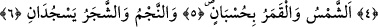
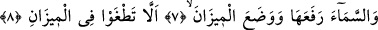
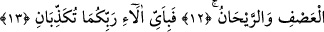

SAKIN DENGEYİ BOZMAYIN!
Bismillâhirrahmânirrahîm
1, 2. Rahmân Kur’ân’ı öğretti.
3. İnsanı yarattı.
4. Ona açıklamayı öğretti.
5. Güneş ve ay bir hesaba göre (hareket etmekte) dir.
6. Bitkiler ve ağaçlar secde ederler.
7. Göğü Allah yükseltti ve mîzanı (dengeyi) O koydu.
8. Sakın dengeyi bozmayın.
9. Ölçüyü adâletle tutun ve eksik tartmayın.
10. Allah, yeri canlılar için yaratmıştır.
11. Orada meyveler ve salkımlı hurma ağaçları vardır.
12. Yapraklı daneler ve hoş kokulu bitkiler vardır.
13. O halde Rabbinizin nimetlerinden hangisini yalanlayabilirsiniz?
Allah, “Rahmân” olandır. Bütün mahlûkâtına şâmil ve kâmil mânâda rahmet etmek
O’na mahsustur. Nitekim, “Ey dünyanın Rahmân’ı, âhiretin Rahîmi!” diye duâ
edilegelmiştir. Çünkü O, rızkı dünyada bütün mahlûkâta yaymış, âhirette ise afvını
yalnız müminlere tahsis etmiştir. Allah’ın bağış ve ihsânı çoktur. O’nun rahmeti her şeye
ulaşmıştır.
Yeryüzü bütün genişliği ile O’nun sofrasıdır.
Bu hân-ı yağmadan dost da alır, düşman da.
Rahmet, gerçek merhamet ve şefkat; yani, rûhânî bir yöneliştir. Allah Teâlâya nisbetle